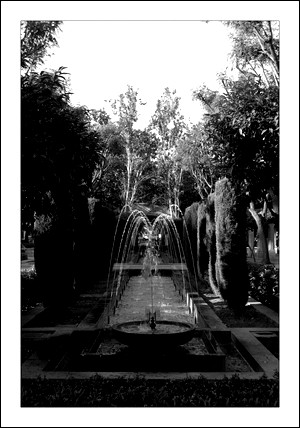

Fuente
S'Hort des Rei
Bajo el palacio de la Almudaina se encuentra “S’Hort des Rei” y ocupa el antiguo jardín del Palacio de la Almudaina desde época musulmana el cual se parecía a un huerto ya que en él se encontraban palmeras, naranjos, limoneros, cipreses, etc. En 1849 el Patrimonio Real cedió el ángulo norte al Ayuntamiento para conectar la nueva calle Conquistador con la plaza de la Reina, y a finales del siglo XIX y principios del siglo XX el jardín ya había desaparecido siendo ocupado por un cuartel de caballería, el Teatro Lírico y el Hotel Almudaina hasta que a finales de los años sesenta, los edificios fueron derruidos y se recuperó el parque.